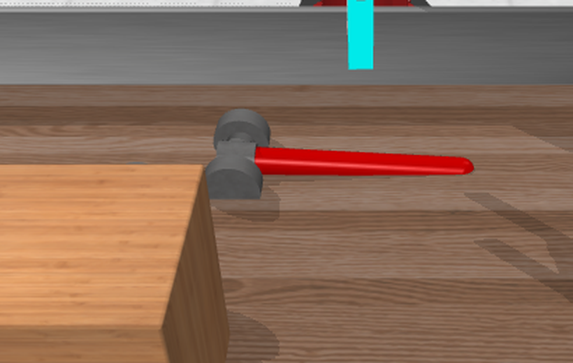

The Agentic Loop
Execute, verify, replan. On 280 development scenes AFFORD-X runs as a closed loop of up to three attempts; the same selections executed once are shown beside it. On Meta-World every attempt shares the benchmark's single 500-step episode. 95% intervals over task clusters; hover a bar.
Recovering From a Failed Attempt
Episodes in which the verifier rejected an attempt, AFFORD-X replanned from the new state and the next attempt was verified. Each video is a replay that reproduces the logged episode.
What the Selection Looks Like
Affordance-grounded arbitration and the agentic loop on logged episodes, each reproduced by replay. Click to enlarge.

scripts/figures/fig_qualitative.py.
Browse Successful Rollouts
One recorded AFFORD-X rollout per LIBERO-PRO cell and per MT50 difficulty tier: the first scene, in sorted order, in which the affordance layer's selection succeeded. Pick a clip, or use the arrow keys.
This rollout could not be played in your browser.
Replay a Real Selection
The hammer scene from the figure, with its 16 logged candidates, their terms and their simulator outcomes. Change the rule and see which candidate is executed and whether it succeeds.

Part source
Combination rule
Terms
Bars are each candidate's final score, normalised to the selected one; gated candidates score zero.
What this is. Logged data, not a worked example. Terms and outcomes are read from the SAM3-grounded 11-task run; each selection was computed with the engine's decision specs and checked against the selections that run recorded. Stability and simulator outcomes never enter the gate.
LIBERO-PRO Goal, Spatial and Object, Pos and Task
A 7-DoF Franka, 10 benchmark initial states per task and every method on the same candidates. Candidate geometry and the goal come from simulator state, so these runs measure the selection layer in isolation. Rates with 95% Wilson intervals; hover a bar.
| Method | Goal Pos | Goal Task | Spatial Pos | Spatial Task | Object Pos | Object Task |
|---|
Within 0.08 of the best candidate
Stability ranking picks the point nearest the centre of mass, which on these bowls is rejected as infeasible or fails in execution, and it succeeds in no Spatial scene. The affordance layer reaches 0.92 under Pos and 0.96 under Task, against 0.61 and 0.71 for random choice among the same candidates.
0.57 under Pos, 0.38 under Task
The affordance layer more than doubles random choice under Pos (0.25) and adds 0.15 over it under Task (0.23), on identical candidate sets.
1.00 under Pos and Task
The affordance layer succeeds in all 100 scenes of each cell, against 0.48 and 0.44 for random choice among the same candidates.
Meta-World MT50, 50 Tasks
The official MT50 tasks and variations with seed 0, five episodes per task, a 4-DoF Sawyer and no perturbations. Rates over 250 episodes with 95% Wilson intervals.
The Feasibility Gate in 3D
On LIBERO-PRO the gate keeps a grasp when reach × approach × collision is at least 0.5, and reach drops to 0.1 outside the Franka workspace, a box fixed to the robot base (x −0.10 to 0.75 m, y −0.50 to 0.50 m, z 0.005 to 0.90 m). Each cell shows one scene, chosen before looking at outcomes as the first in task and initial-state order where the gate removes some grasps and keeps others.
In the five scenes the gate removes 2 to 7 of 12 grasps, and 27 of the 28 removals lie outside the workspace; the one removed inside it, in LIBERO-Spatial Pos, has a collision term of 0.497. The gate removes some grasps in 41 of 80 Goal Pos, 99 of 100 Spatial Pos, 80 of 80 Spatial Task, 30 of 100 Object Pos and 10 of 100 Object Task scenes. Open the viewer on its own page.
Rollouts in 4D
One recorded AFFORD-X rollout per benchmark, replayed from the same reset with a depth camera. SAM3 tracks the object through every frame, each mask is lifted through that frame's depth, and the gripper and arm come from the simulator's geometry map. This is a visualization: no reported result reads these frames.
Handle Points in 3D
The functional term scores a grasp by its distance to the nearest handle point: 1 within 3 cm, falling to 0 at 8 cm. Every reported result takes those points from a geometric partition of the simulator's object cloud; the earlier 11-task Meta-World run took them from SAM3 masks lifted through the rendered depth. Among its eleven objects only the hammer and the wrench have a handle region. Pick one, orbit the scene, switch the source and read each candidate's distance and score.
On the three hammer episodes the geometric partition (54 points) gives no head grasp a functional score of 0.5 or more, and L3 selects a handle grasp in all nine scenes with either source. Both functional scores are recomputed from the points and equal the run log. Open the viewer on its own page.
BibTeX
@misc{sarowar2027affordx,
title = {AFFORD-X: Affordance-Grounded Agentic Policy for Zero-Shot Robot Manipulation},
author = {Md Selim Sarowar and Sungho Kim},
year = {2027},
note = {In preparation},
url = {https://physical-agi.github.io/AFFORD-X/}
}Placeholder entry, to be replaced by the proceedings entry once the paper is accepted.